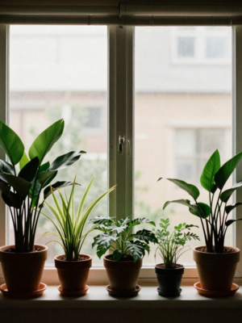
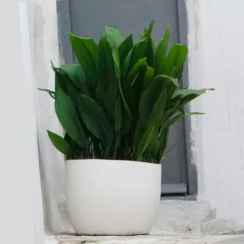

Best Low-Light Plants for North-Facing Apartments
06 February 2026
North-facing apartments can be beautiful and calm — but when it comes to houseplants, they often come with one main challenge: light. Your windows rarely get direct sun and your space feels bright but never truly sunny.
The good news? You don’t have to give up on having plants. You just need the right ones — and the right expectations. Not every plant wants bright sunlight, and slow growth doesn’t mean something is wrong.
This guide focuses on plants that are comfortable in low light, don’t need much adjusting, and fit naturally into apartment living. They’re easy plants that adapt well and keep plant care feeling relaxed.
What “Low Light” Actually Means
Low light doesn’t mean darkness — it just means softer, indirect light. In most north-facing apartments, that usually looks like:
- Bright but indirect light.
- No direct sun hitting the leaves.
- Light that stays fairly consistent throughout the day.
The space itself isn’t the problem. Many common houseplants struggle here simply because they’re built for brighter conditions. When a plant isn’t suited to lower light, it can stop growing, lose leaves, or just never really settle in.
Choosing plants that naturally adapt to lower light levels takes a lot of the guesswork out of plant care. Thankfully, much of the trial-and-error has already been done. Below are my top five favorite low-light houseplants — plants that settle in easily, grow steadily, and make caring for plants in darker apartments feel simpler.
1. Snake Plant (Sansevieria)

Snake plants are one of the most reliable choices for low-light apartments. They tolerate shade better than most houseplants and are known for handling less-than-perfect conditions with ease. Because they grow slowly and store water in their thick leaves, they don’t require frequent watering or constant attention.
Why it works well:
- Handles low to medium light without losing structure.
- Stores water in its leaves, making it drought-tolerant.
- Keeps its upright shape even with minimal care.
- Adapts well to temperatures and dry indoor air.
2. ZZ Plant (Zamioculcas zamiifolia)

The ZZ plant is often recommended for offices for a good reason — it’s slow-growing, extremely tough, and very forgiving. It handles low light and irregular care, which makes it a great option for apartments where light and routines aren’t always consistent.
Why it works well:
- Tolerates low light without stretching or losing its shape.
- Thick stems and underground rhizomes store moisture.
- Doesn’t react dramatically to missed waterings or changes in routine.
- Maintains a neat, structured look with minimal effort.
3. Cast Iron Plant (Aspidistra)

True to its name, the cast iron plant is incredibly resilient. It’s one of the best choices for consistently low-light spaces and does well in apartments where natural light is limited most of the day. This plant is known for quietly adapting to its environment without demanding much attention.
Why it works well:
- Thrives in shade and low-light conditions.
- Tolerates temperature changes and typical apartment environments.
- Very slow, steady growth that doesn’t require frequent care.
- Handles missed waterings better than overwatering.
4. Chinese Evergreen (Aglaonema)

Chinese evergreens are a great choice if you want something softer and more decorative without high demands. They adapt easily to apartment living and handle low light better than many leafy houseplants, making them a reliable option for spaces that don’t get direct sun. Varieties with darker green leaves tend to tolerate lower light better.
Why it works well:
- Adapts well to low-light and indirect light conditions.
- Tolerates dry indoor air, especially during winter.
- Grows evenly and predictably without constant adjustment.
- Offers decorative foliage without requiring bright light.
5. Pothos (Golden or Marble Queen)

While pothos grows faster in brighter spaces, it remains one of the most adaptable trailing plants for apartments. It adjusts well to lower light levels and continues to grow steadily, making it a great option if you want greenery without constant maintenance.
Why it works well:
- Handles indirect and lower light without struggling.
- Forgiving of missed waterings and irregular routines.
- Easy to trim, reshape, and propagate if it gets long.
- Works well on shelves, in hanging planters, or trailing from cabinets.
Adjusting Expectations in Low-Light Homes
One thing that really helps when caring for plants in north-facing apartments is understanding what healthy growth looks like in lower light. In these spaces:
- Growth will be slower.
- Leaves may stay smaller or appear less dramatic.
- Blooming is less frequent, or may not happen at all.
This doesn’t mean your plant is struggling or unhappy. More often, it means the plant is adapting to its environment and conserving energy. In lower light, plants grow at a pace that matches what they’re given — and that’s completely normal.
Slow growth is often a sign of stability — not failure.
Simple Ways to Help Plants Thrive in Low Light
You don’t need grow lights or complicated setups. A few small adjustments can make a big difference:
- Place plants as close to windows as possible.
- Keep leaves clean to maximize light absorption.
- Rotate plants occasionally for even growth.
- Water less often — low light means slower drying.
Sometimes, choosing the right spot matters more than choosing the “perfect” plant.
Final Thoughts
Low-light apartments don’t have to be plant-free. They just call for a different approach — one that values adaptability over fast growth and patience over perfection.
By choosing plants that naturally tolerate low light and adjusting care routines to match your space, plant care becomes calmer and more enjoyable.
Slow growth is still growth.